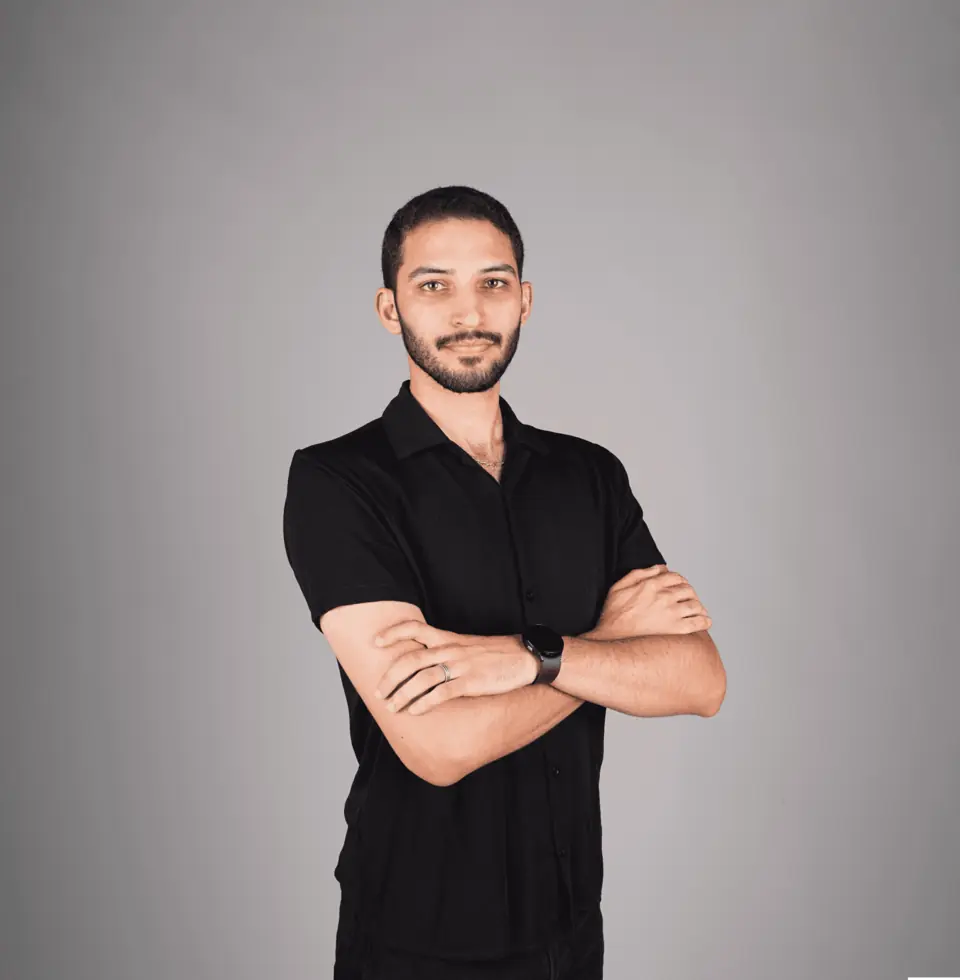

Programme hybride · 2026-2027
Former l'excellence.
Ouvrir l'accès.
U.Psy Academy : quatre parcours pour les psychologues, les sportifs, les entraîneurs et les organisations qui veulent faire de la santé mentale un levier de performance et un droit pour tous.
Notre raison d'être
Au Maroc et en Afrique, la plupart des personnes qui ont besoin d'un psychologue n'en voient jamais. Nous construisons le chemin le plus court entre un besoin et le bon professionnel.
U.Psy est né d'une conviction clinique : la santé mentale n'est pas un luxe réservé à quelques-uns. C'est une condition de la santé, de l'apprentissage, du travail et de la performance sportive.
Pour la rendre accessible, il faut deux choses en même temps : des professionnels formés au plus haut niveau, et une infrastructure qui les met en relation avec ceux qui en ont besoin, au cabinet ou en ligne, en darija, en arabe, en français ou en anglais.
U.Psy Academy est la première de ces deux moitiés. Elle forme, certifie et accompagne les praticiens qui rejoignent le réseau, et elle transmet aux sportifs, aux entraîneurs et aux organisations les outils que la recherche a validés.
La plateforme est la seconde : orientation, réservation, téléconsultation, suivi, et une évaluation des dossiers par la Ligue des Spécialistes de la Santé Psychologique et Mentale (LSSPM).
4
parcours de formation
Sport · préparation mentale · organisations · clinique11
écoles thématiques
Le Centre de formation U.Psy, de la clinique à l'IA4
langues de pratique
Darija, arabe, français, anglais
U.Psy Academy02
Un écosystème, pas seulement une formation
Ce que vous apprenez ici, vous l'exercez sur U.Psy dès le lendemain.
Chaque parcours débouche sur la plateforme : un profil vérifié, des patients orientés, des outils de suivi et une communauté de pairs. La formation n'est pas une fin, c'est une porte d'entrée.
AccompagnementPsychologues vérifiés, au cabinet ou en visio, avec tarifs affichés.
OrientationUn parcours en 6 étapes qui oriente chaque personne vers le bon praticien.
Espace AthlèteDisponibilité, objectifs, compétitions, protocoles, journal et rapport de progression.
ÉvaluationsDépistages validés (GAD-7, PHQ-9) et outils de profilage sportif.
Ligue LSSPMRevue des dossiers professionnels par la Ligue, pour un réseau de confiance.
CommunautéEspaces de pairs, supervision, veille mensuelle et Observatoire U.Psy.
U.Psy Academy03
Parcours 01 · Professionnels
Certification en psychologie du sport et de la performance
Pour les psychologues et les professionnels de l'accompagnement qui veulent intervenir auprès des sportifs, des clubs et des fédérations avec rigueur.
01Fondements de la psychologie du sportMotivation, attention, émotions et performance ; le cadre d'intervention.
02Évaluation et profilage mentalEntretien, outils psychométriques, lecture des données de disponibilité.
03Techniques d'interventionImagerie, routines, fixation d'objectifs, régulation émotionnelle, dialogue interne.
04Préparation à la compétitionGestion de la pression, plans pré-compétition, analyse post-compétition.
05Santé mentale de l'athlèteBlessure, transitions de carrière, surentraînement, repérage et orientation.
06Éthique et pratique en clubConfidentialité, rôles avec le staff, contractualisation, travail en fédération.
À l'issue du parcours, vous saurez
- Conduire une évaluation mentale complète d'un sportif
- Construire et suivre un plan de préparation mentale
- Intervenir dans un club ou une fédération avec un cadre clair
- Public
- Psychologues, étudiants en fin de cursus, professionnels de l'accompagnement
- Format
- Hybride : présentiel, modules en ligne, supervision de cas
- Durée
- à confirmer
- Validation
- Certificat U.Psy après évaluation finale et cas supervisés
- Débouché
- Profil « Performance » sur U.Psy et accès à l'Espace Athlète
Parcours 0105
Parcours 02 · Sportifs et entraîneurs
Préparation mentale à la compétition
Pour les sportifs, les entraîneurs et les clubs qui veulent travailler le mental avec la même méthode que le physique.
01Comprendre son fonctionnement mentalStress, activation, confiance : ce qui se passe avant et pendant l'épreuve.
02Concentration et attentionRester dans l'action, revenir au présent après une erreur.
03Routines de performanceConstruire sa routine d'avant-match, de récupération et de sommeil.
04Gérer la pressionRespiration, imagerie, dialogue interne, plan de match mental.
05RebondirAprès une défaite, une blessure ou une sélection manquée.
06Le rôle de l'entraîneurCommunication, climat d'équipe, repérer quand orienter vers un psychologue.
À l'issue du parcours, vous saurez
- Appliquer une routine de performance personnelle
- Gérer la pression avant et pendant la compétition
- Suivre sa progression dans l'Espace Athlète
- Public
- Sportifs (dès 15 ans, avec accord parental pour les mineurs), entraîneurs, clubs
- Format
- Ateliers en présentiel, programme en ligne et suivi dans l'Espace Athlète
- Durée
- à confirmer
- Livrable
- Plan mental personnel et rapport de progression
- Pour les clubs
- Sessions d'équipe et tableau de bord collectif
Parcours 0206
Parcours 03 · Organisations
Résilience et leadership
Pour les entreprises, les fédérations et les institutions qui veulent prévenir l'épuisement et faire de la santé psychologique un levier de performance collective.
01Comprendre le stress au travailMécanismes, signaux d'alerte, facteurs organisationnels.
02Prévenir l'épuisement professionnelCharge, récupération, limites, repérage précoce.
03Leadership et sécurité psychologiqueCréer un climat où l'on peut parler, se tromper et progresser.
04Communication en situation difficileConflits, annonces, accompagnement d'un collaborateur en difficulté.
05Mesurer pour agirBaromètre de bien-être, indicateurs, plan d'action.
06Orienter vers le soinUn circuit clair vers un psychologue, dans le respect de la confidentialité.
À l'issue du parcours, vous saurez
- Repérer les signaux d'épuisement dans une équipe
- Installer des pratiques de sécurité psychologique
- Mesurer le bien-être et piloter un plan d'action
- Public
- Dirigeants, managers, RH, staff de fédérations
- Format
- Séminaires sur site, classes virtuelles, programme pour les équipes
- Durée
- à confirmer
- Livrable
- Diagnostic, plan d'action et indicateurs de suivi
- Option
- Accès des collaborateurs aux psychologues U.Psy
Parcours 0307
Parcours 04 · Psychologues
Pratique clinique avancée
Pour les psychologues qui veulent consolider leur pratique, en cabinet comme en téléconsultation, en lien avec la Ligue (LSSPM).
01Entretien et évaluation structurésAnamnèse, outils validés, formulation de cas.
02Interventions fondées sur les preuvesTCC et approches validées, adaptation culturelle au contexte marocain.
03Risque et criseRepérage du risque suicidaire, plan de sécurité, orientation en urgence.
04TéléconsultationCadre, éthique, sécurité et alliance thérapeutique à distance.
05Dossier et documentationNotes, consentement, confidentialité, conservation des données.
06Supervision et intervisionCas cliniques en petits groupes, avec des praticiens expérimentés.
À l'issue du parcours, vous saurez
- Structurer une évaluation clinique et une formulation de cas
- Gérer une situation de risque avec un plan de sécurité
- Exercer en téléconsultation avec un cadre éthique solide
- Public
- Psychologues cliniciens et psychothérapeutes
- Format
- Hybride, avec supervision en petits groupes
- Durée
- à confirmer
- Validation
- Certificat U.Psy ; dossier transmissible à la LSSPM pour revue
- Débouché
- Profil vérifié et patients orientés sur U.Psy
Parcours 0408
Qui forme, qui garantit
Une exigence portée par des praticiens et par la Ligue.

Mehdi Felji
Psychologue clinicien du sport · Fondateur d'U.Psy
Il a conçu U.Psy pour rapprocher l'exigence clinique et la performance, et pour rendre l'accompagnement psychologique accessible au plus grand nombre.
Équipe pédagogique
Psychologues cliniciens, psychologues du sport et spécialistes des organisations. Composition par parcours : à confirmer
En collaboration avec la LSSPM
La Ligue des Spécialistes de la Santé Psychologique et Mentale (LSSPM) évalue, sur U.Psy, les dossiers des psychologues qui l'y autorisent.
La grille de la Ligue
Chaque dossier partagé avec la LSSPM est noté de 0 à 5 sur cinq critères, puis reçoit un avis : recommandé, compléments demandés ou non recommandé.
0–5Formation et diplômes
0–5Expérience clinique
0–5Complétude du dossier
0–5Spécialisation
0–5Déontologie
U.Psy Academy10
La santé mentale, accessible à chacun.
Portée par les meilleurs professionnels.
 upsy.ma · Maroc · Afrique · en ligne
upsy.ma · Maroc · Afrique · en ligne